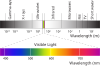

photosynthetically-active

Definition: Photosynthetically active radiation (PAR) designates the spectral range (wave band) of solar radiation from 400 to 700 nanometers that photosynthetic organisms are able to use in the process of photosynthesis. This spectral region corresponds more or less with the range of light visible to the human eye. Photons at shorter wavelengths tend to be so energetic that they can be damaging to cells and tissues, but are mostly filtered out by the ozone layer in the stratosphere. Photons at longer wavelengths do not carry enough energy to allow photosynthesis to take place.
Source: Wikipedia
Wikipedia Page (Something wrong with this association? Let us know.)
Wikidata Page (Something wrong with this association? Let us know.)